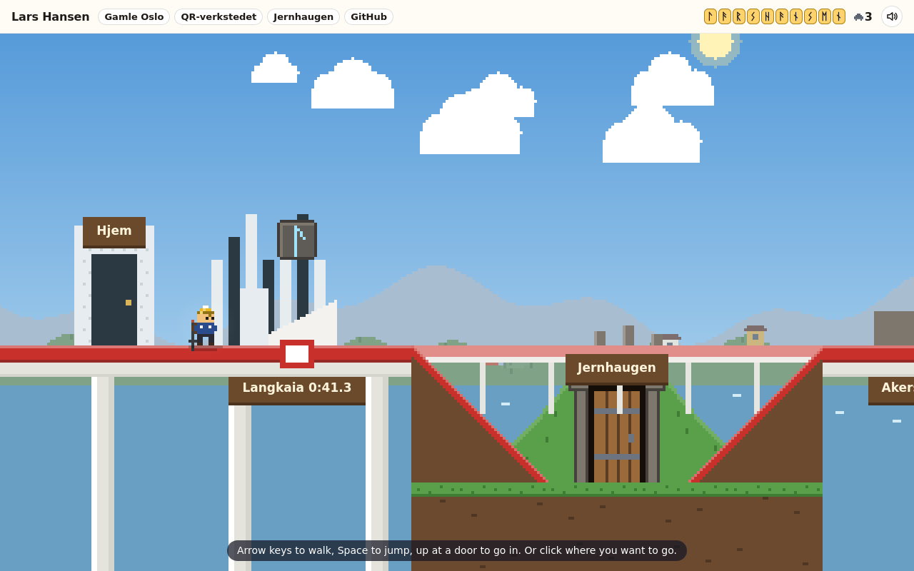

Vikingfjorden · as built, 14 November 2026
The viking game is ten levels. Each is a place in Oslo, each ends at one rune, and the ten places start with the ten letters of your name. This page describes the game as it is live at larshansen.dev/viking.
Same person as the front page, same jump, same pixels, same Oslo sky. The front page stays the walk through Gamle Oslo; the Opera's secret door opens onto the rest of the city.
built All ten levels, the line map, two bosses, the ending, and the maze as a bonus stop. not yet Played by a person at real speed. Everything here was checked by scripted players and still pictures.
This page began on 13 November as the plan, with hand-drawn sketches of each level. The sketches are gone (they are in the file's git history); the pictures below are screenshots of the game. Where the build left the plan, the last section says how.
The front page, the viking game and the maze all run on packages/pixelkit. When this was a plan they shared only the engine and kept everything a level is made of twice. That is now one copy.
| Part | Where it lives now | Note |
|---|---|---|
| Physics | shared one stepBody: run 1.6, jump 5, 60 steps a second | The constants were never retuned. Ice, belts, wind and moving ground are things the world reports to the body. |
| Person | shared 10 × 14, red hat, helmet over it in the viking world | The ski pole and the headlamp are a few extra pixels on the same sprite. |
| Sky, clock, sound, input, header bar | shared | Levels may pin a sky. Langkaia keeps the real Oslo hour. In the viking game the header is solid cream so it reads over dark levels. |
| Map reading | shared tilemap.ts, a legend per level | Levels are data, written with strokes in levels/build.ts, not typed-out rows. |
| The scene loop | shared scene.ts, camera.ts, doors.ts, walkto.ts | The front page is a scene with one level; the viking game is one runner (game/play.ts) with ten. |
| Art | shared props.ts, every colour in palette.ts | Colours only one level uses sit in swatches/ and come with that level's file. |
| Level rules | shared carrier, checkpoint, launcher, timed, surface, zone, hazard, dark | Each is a small pure rule with its own test. The maze's dark level uses the same dark.ts. |
| The front page itself | unchanged | 28 reference screenshots were compared byte for byte after every change to the kit. |
Front page, viking world, and after all ten runes. The pompom shows in every one.
Daylight colours from palette.ts. Dusk and night come from the shared tint, in every level.
The plan said nothing could hurt and there were no lives. You asked for enemies, lives, pits and platforming, at the length of a Mario level, with a splash of Hollow Knight. These are the rules as built.
An enemy's touch, something thrown, or a fall into water or a pit costs a heart and leaves him blinking and safe for a second and a half; a fall while he still blinks costs nothing more. No hearts: a life goes and he restarts at the last flag or bench. No lives: Game over restarts only that level, with three lives; in a boss's fight it goes on from the bench before the boss instead. Nothing cleared or found is ever lost, and restarting a level farms no lives: its cheese and its skilling pay once a visit.
A flag is where falls bring him back. A bench does that too and fills the hearts when he sits (up). Every level has one or two benches and four to seven flags, so a fall seldom costs more than about fifty columns of walking; each boss has a flag and a bench right before it.
Walkers, flyers, throwers and jumpers are beaten by landing on them. Spiky things hurt from above too. Throwers lob on a beat after a one-second wind-up, and never at a flag, a bench or a sign. Jumpers leap out of water after a ripple. A beaten enemy gives a skilling. Each kind first appears alone, and none stands at the take-off or landing of a jump over water, or on ice.
52 to 79 copper skilling per level; a hundred is a life. One slice of brown cheese per level, in a secret, is a life. One gold bracteate per level can only be reached with the raven's feather from the maze.
Clearing Holmenkollen gives a dash: three tiles in ten steps, level, once each time he is in the air and again on the ground after a short rest (Shift or X, or the Dash button). From Akerselva on some gaps need it.
The troll in Nordmarka and the snow plough in Nabolaget. Three hits each. Both show what they are about to do for a full second first, say their lines in a bubble beside them, and after a round with no hit give a short hint; the troll's dawn falls as a bright shaft on the floor. The plough hurts only while it moves at him, and standing still it is in his way.
Between levels he rides. The map is one T-bane line with ten stations, drawn in pixels, with a rune lit in the header for every station he has finished and his best time on the station's board. A station opens when the one before it is cleared. A finished station can be replayed for a better time.

Jernhaugen is a side stop on the line map, open from the start and never required. Its prize is the raven's feather, the second jump. No rune needs it. What it opens is the gold bracteate in every level. The mound also stands in Nordmarka, with a door into the maze and back out to the forest.
The original 2019 maze is kept as it was, music and all, on the branch iron-maze-original and in the archived iron-maze repository. The new one has no music and no audio files: only the kit's short synthesised blips, behind the shared mute.
| Made better | How |
|---|---|
| A ghost | Your best run of each level walks beside you as a pale figure. Recorded as positions per step, so it is exact. |
| Three marks per level | Cleared, cleared without a curse, cleared under the par time. Shown as three notches on the level's standing stone. |
| Teleport stones | The old game had a teleport sound and nothing that used it. Paired rune stones now move him across the map. |
| Feel | A short freeze and rust-red burst on a curse, dust at his feet, the torch flickering, the raven turning its head to watch. |
| Fairness | Every corridor at least one tile wide, every level cleared by a scripted player at key speed and at pointer speed. |
| A way in and out | From the line map and from Nordmarka. Clearing maze level 3 gives the feather; all seven turn it gold. |
Each picture is a screenshot of the level, taken on the Pi by stepping the game to that moment. Lengths are in 16-pixel columns; a screen is 20 wide. "Scripted clear" is how long the test's scripted player takes going straight through, without waiting on purpose and without the secrets; a first visit by a person will be several times that.
One new thing per level, taught in a safe spot first and tested after. Every level runs in four parts: teach, practise, twist, set piece.
| Level | New thing | Rule | Lives in the kit as |
|---|
What the game takes from you: the name as ten runes, the red hat, the Raspberry Pi that serves the site, and your apps as doors (Runesmia is the QR maker, Jernhaugen the maze, Verkstedet your GitHub, the kiosk under Stortinget is Quintle).
What you added on 14 November, and where it went:
One work order per phase in docs/games/orders/, each built on a branch by an implementer, reviewed, and merged to main, which deploys. The full story is in docs/games/HANDOVER.md, the reasons in docs/adr/.
| Order | Work | Merged as |
|---|---|---|
| 1 – 6 | The kit extracted; the viking game and the maze rebuilt in the front page's style; the joins between the three. | before this plan |
| 7 – 9 | The level kit, the line map, saved progress, three short levels, the maze made better and joined on as the bonus stop. | PR #49 |
| 10 A | Slottet and Holmenkollen. Hearts, lives, enemies, pits, benches, skilling. Levels fetched on demand. | PR #50 |
| 10 B | Akerselva and Nordmarka. The dash, zones, the dark, the troll. | PR #51 |
| 10 C | Stortinget, Ekeberg and Nabolaget. Belts, trains, the third rail, gusts, the plough, the ending. | PR #52 |
| 10 D | Langkaia, Akershus and Rådhuset lengthened to the same measure as the rest. | PR #53 |
| 11 | Høyenhall's banner, Kværnertoppen, Kruttverket; the handover and sixteen decision records. | PR #54 |
| 12 | Made fair after an adversarial review with a sloppy scripted player: rules at the edges, Game over at a boss, waits cut, the joins, the engineering. | PR #57 |
| 13 | The look and the words: flat areas broken, trams on their rails, a plated banner, enemies that read at night, upright phones; every line read again; the last unfair places. | branch look-and-words |
The plan recommended very little, and no lives. You asked for enemies, lives and pits, so every level has 8 to 15 enemies, three hearts and real falls. The King's Guard, the moose and the sheep still only move him.
The plan had 110 to 190 columns per level. You asked for Mario length: every level is 224 to 280 columns, about 2,500 in all.
As planned. No rune needs the feather.
As planned: the longship to Langkaia, the smithy to Akerselva, the beacon became the Pi's light in the yellow house, red until the last rune is taken and green after.
There is a best time per level. The total for all ten in one sitting was not built. The gold helmet is for having all ten runes, not for a single run.
The ski pole's dash, benches, two bosses, skilling and brown cheese, a Game over card, and levels that load one at a time so the first page stays under 60 kB.
Nobody has played it at real speed. Rådhuset's carillon is where a sloppy player still gives up most. The routes stand still a little over a third of the way in Rådhuset, Akerselva and Nordmarka, mostly riding. Upright phones were seen only in a headless browser. The full list is in the handover.
Your childhood street, and any explanation of the personal details, are not in the game or the public repository.